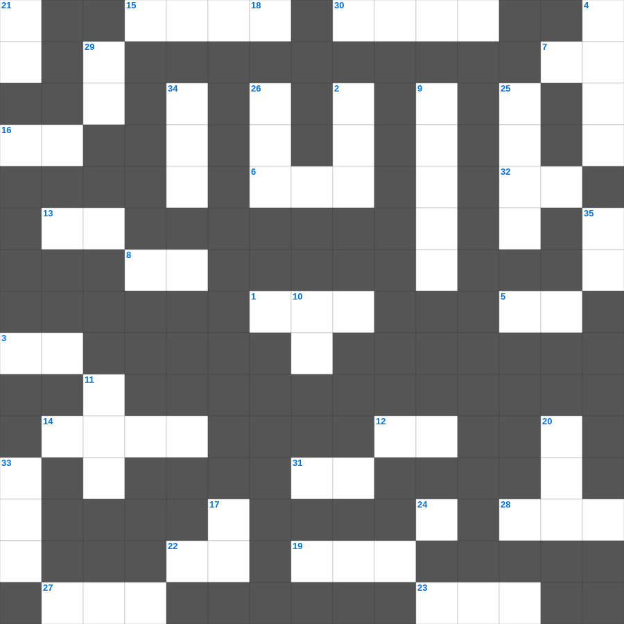

예레미야: 새 언약
📌 서비스 정의
십자가로세로는 교회 주보와 주일학교에서 사용할 수 있는 성경 기반 가로세로 퍼즐 서비스입니다. 성경 인물, 사건, 핵심 구절을 바탕으로 제작되었습니다. 온라인 풀이 및 인쇄 기능을 제공합니다.
📖 예레미야란?
예레미야는 유다의 멸망을 눈물로 예언한 '눈물의 선지자'의 메시지를 담은 책으로, 회개의 촉구와 새 언약에 대한 소망을 함께 전합니다.
📚 예레미야의 주요 사건·주제
예레미야의 소명 · 거짓 선지자들과의 대립 · 유다의 멸망 예언 · 새 언약 예언(예레미야 31장) · 예루살렘 함락
오늘은 예레미야의 주요 내용을 담은 예레미야 성경퀴즈를 준비했습니다. 총 35개의 힌트가 있으며, 주일학교 교재나 성경공부 자료로 활용하기 좋습니다. 무료로 즐기는 예레미야 가로세로 퍼즐을 지금 바로 풀어보세요!

📝 가로 힌트
1. 대제사장의 흉패에 박힌 열두 보석 중 하나
3. 좋은 땅에 떨어진 씨앗은 몇 배의 결실?
5. 하나님이 세상을 창조하신 기간(일)
6. 오직 의인은 믿음으로 말미암아 살리라
7. 보냄을 받은 자라는 뜻
8. 예수님의 육신의 아버지
12. 열 처녀 비유에서 준비해야 했던 것
13. 예배의 시작을 알리는 종소리나 기도
14. 우리의 신앙 고백이 담긴 기도문
15. 노아의 방주가 머문 산
16. 광야에서 이스라엘이 먹은 하늘 양식
19. 삼손의 힘의 비밀을 알아낸 여인
22. 멜리데 섬에서 바울을 문 동물
23. 솔로몬 성전의 두 기둥 이름 중 다른 하나
27. 예수님이 매달리신 형틀
28. 모세의 누나
30. 아브라함이 이삭을 번제로 드리려 한 산
31. 여호와 이것: 승리의 하나님
32. 여호와 이것: 준비하시는 하나님
📝 세로 힌트
2. 시편, 잠언, 전도서 등을 일컫는 말
4. 나는 이것나무요 너희는 가지니
9. 우리가 거할 영원한 집
10. 천국은 밭에 감추인 이것과 같으니
11. 복음을 전하는 자
17. 초대 교회에서 구제를 위해 세운 일곱 이것
18. 겨자씨 한 알 만한 믿음이 있으면 이 이것을 옮기리라
20. 함께 가져온 물고기의 마리 수
21. 예수님의 옷 가에 달렸던 것
24. 제사장들이 머리에 쓴 것
25. 떡 다섯 개와 물고기 두 마리로 오천 명을 먹이심
26. 죽은 지 나흘 만에 살아난 사람
29. 혼인 잔치에 이것을 입지 않은 사람
33. 보라 세상 죄를 지고 가는 하나님의 이것
34. 세계 최초의 소방관은 누구일까요? (불 속에서 살아남음)
35. 지성소와 성소를 가로막고 있던 천
🧑🏫 교회 교육 자료 활용
이 퍼즐은 주일학교 교재 추천 자료로 활용할 수 있고, 주일학교 주보에 넣기 좋은 분량으로 구성되어 있습니다. 수업용 주일학교 교안에 활동지로 붙이거나, 예배 후 복습용 주일학교 공과교재로 바로 사용할 수 있습니다.
🏷️ 키워드
예레미야 성경퀴즈, 예레미야, 십자가로세로, 성경퀴즈, 말씀퀴즈, 가로세로퍼즐, 주일학교 교재 추천, 주일학교 주보, 주일학교 교안, 주일학교 공과교재